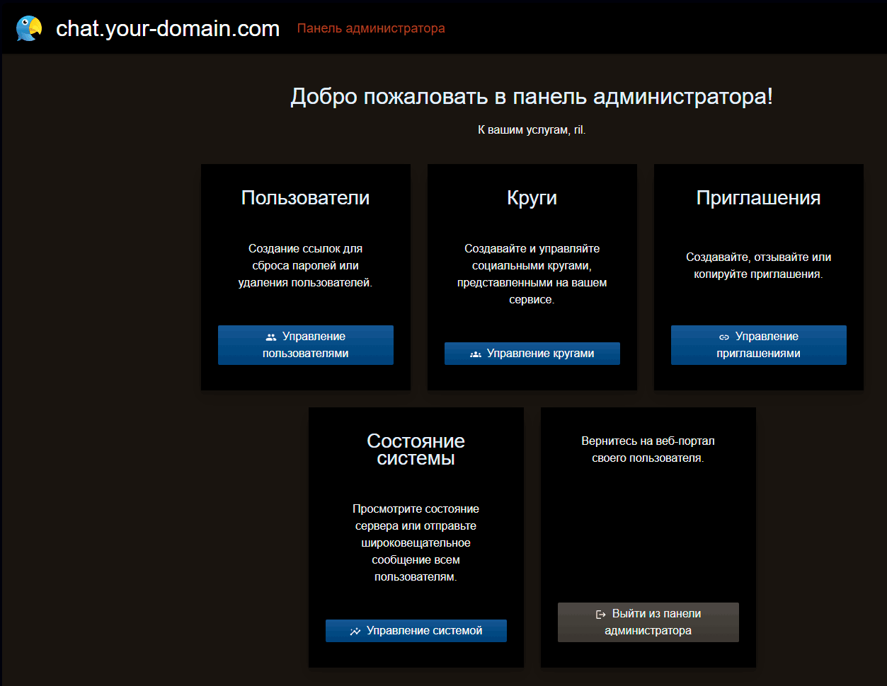

С хабра:Звонки через Jabber в докер-контейнере за 5 минут
В свете сами знаете чего, свой приватный мессенджер и возможность звонков на XMPP стали как никогда актуальны.
Есть быстрый и простой способ: за несколько минут вы поднимаете собственный Jabber-сервер.
Дальше — дело техники: рассылаете приглашения маме, бабушке, теще, жене и соседке Даше.
После этого можно спокойно звонить и переписываться в защищённом мессенджере, который полностью под вашим контролем.
Звонки идут в зашифрованном режиме, работают p2p. А если у собеседника хитрый NAT, то на помощь автоматически приходит встроенный STUN-сервер.
Клиенты есть под все платформы: Android, iOS, Windows, macOS и Linux.
Итак для начало нужно арендовать VPS (минимум 1 ГБ RAM), если вы делаете сервис для себя и близких, можно даже в РФ.)
Вот на вскидку где можно купить:

RU VDS | Виртуальные серверы 💻 в аренду VDS/VPS на SSD | Windows хостинг защитой от DDoS-атак
Виртуальные серверы VPS/VDS Windows от 240 руб. Защита от DDoS 400 руб. SSD eMLC. ЦОД TIER III в Москве! Интернет до 100 Mbp/s без ограничений. Пройдите регистрацию и получите 3 дня теста на сервер до 3 000 руб!

Хостинг, VPS/VDS, регистрация доменов | Интернет Хостинг Центр
Хостинг для проектов любой сложности от 117 рублей в месяц. Аренда серверов, виртуальный хостинг, VDS/VPS с поддержкой 24/7. Регистрация доменов. Выпуск SSL-сертификатов. ✅
Либо в сети можно поискать.
Есть также Snikket Hosting где уже всё настроено...
Также нужен домен, зарегистрировать можно например в reg.ru.
Либо где угодно например Хостинг-провайдер - Купить домен и хостинг у аккредитованного регистратора там-же и VPS можно арендовать.
Ещё-раз, что нужно:
- VDS / VPS с белым IP
- Домен
Пошаговая настройка
1)Установка docker и Docker Compose версии 2
Если уже установлен, то пропускайте этот шаг. Для Ubuntu / Debian:
Код:
sudo apt update
sudo apt install -y docker.io docker-compose-plugin
sudo systemctl enable --now dockerДля RHEL / Rocky Linux / AlmaLinux
Код:
sudo dnf -y install dnf-plugins-core
sudo dnf config-manager --add-repo https://download.docker.com/linux/fedora/docker-ce.repo
sudo dnf -y install docker-ce docker-ce-cli containerd.io docker-compose-plugin
sudo systemctl enable --now dockerМожно запустить и на старых дистрибутивах — всё будет работать. Но на этом останавливаться не будем. Скрипты требуют Docker Compose версии 2 и несовместимы с устаревшим docker-compose v1.
2)Прописываем DNS
Код:
A chat.your-domain.com → <белый IP VDS/VPS>
CNAME groups.chat.your-domain.com → chat.your-domain.com
CNAME share.chat.your-domain.com → chat.your-domain.com3)Открываем порты
Для Debian/Ubuntu:
Код:
# Веб/ACME
sudo ufw allow 80/tcp
sudo ufw allow 443/tcp
# XMPP
sudo ufw allow 5222/tcp # c2s
sudo ufw allow 5269/tcp # s2s (федерация, опционально)
# STUN/TURN (основные и альтернативные порты)
sudo ufw allow 3478/tcp
sudo ufw allow 3478/udp
sudo ufw allow 3479/tcp
sudo ufw allow 3479/udp
sudo ufw allow 5349/tcp # TLS
sudo ufw allow 5349/udp
sudo ufw allow 5350/tcp
sudo ufw allow 5350/udp
# RTP-реле TURN (медиа)
sudo ufw allow 49152:65535/udp
# (Опционально) proxy65 для file-transfer
sudo ufw allow 5000/tcpRHEL / Rocky Linux / AlmaLinux
Код:
# Веб/ACME
sudo firewall-cmd --permanent --add-port=80/tcp
sudo firewall-cmd --permanent --add-port=443/tcp
# XMPP
sudo firewall-cmd --permanent --add-port=5222/tcp
sudo firewall-cmd --permanent --add-port=5269/tcp
# STUN/TURN
sudo firewall-cmd --permanent --add-port=3478/tcp
sudo firewall-cmd --permanent --add-port=3478/udp
sudo firewall-cmd --permanent --add-port=3479/tcp
sudo firewall-cmd --permanent --add-port=3479/udp
sudo firewall-cmd --permanent --add-port=5349/tcp
sudo firewall-cmd --permanent --add-port=5349/udp
sudo firewall-cmd --permanent --add-port=5350/tcp
sudo firewall-cmd --permanent --add-port=5350/udp
# RTP-реле TURN (медиа)
sudo firewall-cmd --permanent --add-port=49152-65535/udp
# (Опционально) proxy65
sudo firewall-cmd --permanent --add-port=5000/tcp
sudo firewall-cmd --reload4)Ставим snikket
Код:
cd /opt
git clone https://github.com/snikket-im/snikket-selfhosted.git snikket
cd snikket
./scripts/init.shПосле запуска ./scripts/init.sh вас спросят имя вашего домена и email, после этого запускаем:
Код:
./scripts/start.shЕсли все прошло ок, то https://<your domain>/ уже будет форма для ввода логина и пароля.
Теперь осталось сформировать и послать самому себе админский инвайт:
Код:
./scripts/new-invite.sh --admin --group defaultАдминка и инвайты для юзеров
После того как вы создали админский инвайт и прошли регистрацию, можно зайти на сайт https://<ваш-домен>/ — и вы попадёте в админ-зону:

Из админ-зоны можно сразу отправить первое приглашение. Как только человек его примет и установит приложение — можно звонить и переписываться.
На этом всё!
Технические подробности
Если кому-то интересно, то давайте посмотрим, что мы получили из коробки:- Сервер XMPP (Jabber) — личный мессенджер без рекламы и слежки.
- Поддержка федерации — общение с пользователями на других серверах XMPP.
- Группы и чаты — приватные и публичные комнаты.
- Файлы и мультимедиа — отправка фото, документов
- Звонки — встроенный STUN/TURN для аудио- и видеосвязи (WebRTC).
- Сквозное шифрование и автономность аккаунта — сквозное шифрование, независимость от телефонного номера
- Мультиаккаунты и мультидевайсы — один юзер может быть на нескольких устройствах.
- Docker-установка — быстрый запуск на Linux-сервере.
- Минимальные требования — достаточно 1 ГБ RAM, поддерживается Raspberry Pi.
- Бесплатно — всё бесплатно, звонки работают через встроенный TURN/STUN, ну либо есть ещё Snikket Hosting для тех, кому совсем лень и готов просто заплатить около $6/мес за готовый сервер с поддержкой медиарелеев по всему миру и автоматическим обновлением
- Jitter‑буфер для WebRTC — служит буфером, выравнивает задержки и помогает стабильно передавать аудио, особенно при нестабильных сетях и сложных NAT.
- Snikket сам получает и продлевает сертификаты Let’s Encrypt. У него внутри есть certbot-контейнер, который автоматически запрашивает и обновляет сертификаты и для веб‑портала, и для служб XMPP, STUN/TURN
Немного о jitter-буфере
Jitter‑буфер — это временное хранилище аудио‑пакетов, которое регулирует их подачу на клиент в равномерном потоке, чтобы избежать искажений и пропаданий звука при переменных задержках сети или нестабильном подключении.В Snikket такой буфер встроен в WebRTC-движок, поэтому, даже если пользователь за NAT с нестабильной связью, звонок остаётся плавным и без резких «дёрганий» аудио.
Немного о звонках
- По умолчанию звонки P2P. Клиенты стараются установить прямое соединение друг с другом через STUN.
- Если NAT сложный (симметричный, CGNAT и т.п.), тогда в дело вступает TURN-сервер. В Snikket он встроен, можно оставить свой или подключить внешний. TURN просто пересылает UDP-пакеты между клиентами.
- TURN не расшифровывает медиапоток. Всё зашифровано протоколом SRTP (Secure RTP) в рамках WebRTC.
- Даже администратор сервера, на котором крутится TURN, не может прослушать или записать звонок, потому что у него нет ключей для расшифровки. Он видит только зашифрованный поток байтов.
- Обычный случай: звонок идёт напрямую P2P.
- Сложный NAT: трафик «прокачивается» через TURN, но всё равно остаётся end-to-end encrypted, без возможности перехвата.
Маскировка аудиотрафика
Если всё работает стабильно — лучше ничего не менять, так вы сохраните качество звука. Но если провайдер или мобильный оператор начинает «резать» звонки, можно запустить TURN на порту 443 и замаскировать трафик под HTTPS.Есть два способа:
- Использовать дополнительный белый IP и повесить TURN на него, на порт 443.
- Запустить nginx-сплиттер и разрулить всё на одном IP.
Код:
mkdir /opt/turnserver
cd /opt/turnserverСоздаем в этой папке файл docker-compose.yml вот с таким содержанием:
Код:
version: "3.8"
services:
coturn:
image: instrumentisto/coturn:latest
container_name: coturn
restart: unless-stopped
network_mode: host
volumes:
- /opt/turnserver/turnserver.conf:/etc/coturn/turnserver.conf:roВариант A: ДВА «белых» IP
Snikket живёт на IP₁ (HTTP/HTTPS/XMPP), а TURN — на IP₂ и слушает 443/TLS напрямую.DNS:
chat.your-domain.com → IP₁
turn.your-domain.com → IP₂
Snikket (IP₁) Указываем внешний TURN в файле /opt/snikket/snikket.conf добавляем строки
Код:
SNIKKET_TWEAK_TURNSERVER=0
SNIKKET_TWEAK_TURNSERVER_DOMAIN=turn.your-domain.com
SNIKKET_TWEAK_TURNSERVER_SECRET=ME_SECRETДелаем: docker compose up -d чтобы конфиг перечитался.
В файл /opt/turnserver/turnserver.conf кладем следующее:
Код:
listening-ip=IP_2
tls-listening-port=443
relay-ip=IP_2
fingerprint
use-auth-secret
static-auth-secret=ME_SECRET
realm=turn.your-domain.com
cert=/etc/letsencrypt/live/turn.example.com/fullchain.pem
pkey=/etc/letsencrypt/live/turn.example.com/privkey.pemИ далее docker compose up -d для перечитывания
Плюсы: проще, меньше прослоек; отличная устойчивость, звонки реально «как HTTPS» на 443/TLS; меньше джиттера по сравнению с проксированием через stream.
Минусы: нужен второй IP.
Вариант B: ОДИН «белый» IP и nginx как сплиттер
Создаем поддомен turn.your-domain.com и вешаем на тот же самый белый ip.Настраиваем nginx примерно так:
Код:
stream {
map $ssl_preread_server_name $backend {
turn.example.com turn_tls;
default https_upstream;
}
upstream turn_tls { server 127.0.0.1:5349; }
upstream https_upstream { server 127.0.0.1:8443; }
server {
listen 443 reuseport;
proxy_pass $backend;
ssl_preread on;
}
}Отдаем HTTP на Snikket, чтобы он сам выпускал/продлевал сертификаты:
Код:
server {
listen 80; listen [::]:80;
server_name chat.your-domain.com groups.chat.your-domain.com share.chat.your-domain.com;
location / {
proxy_set_header Host $host;
proxy_pass http://127.0.0.1:5080; # SNIKKET_TWEAK_INTERNAL_HTTP_PORT
}
}Указываем внешний TURN в файле /opt/snikket/snikket.conf добавляем строки
Код:
SNIKKET_TWEAK_TURNSERVER=0
SNIKKET_TWEAK_TURNSERVER_DOMAIN=turn.your-domain.com
SNIKKET_TWEAK_TURNSERVER_SECRET=ME_SECRETДелаем: docker compose up -d чтобы конфиг перечитался.
В файл /etc/coturn/turnserver.conf кладем следующее:
Код:
listening-ip=127.0.0.1
tls-listening-port=5349
relay-ip=<ПУБЛИЧНЫЙ_IP>
fingerprint
use-auth-secret
static-auth-secret=<ДЛИННЫЙ_СЕКРЕТ>
realm=example.com
cert=/etc/letsencrypt/live/turn.example.com/fullchain.pem
pkey=/etc/letsencrypt/live/turn.example.com/privkey.pemdocker compose up -d чтобы конфиг перечитался.
Плюсы: один IP, звонки «как HTTPS» на 443/TLS; Snikket продолжает сам управлять LE.
Минусы: чуть сложнее; extra‑хоп (nginx stream) → немного повышается латентность/джиттер.